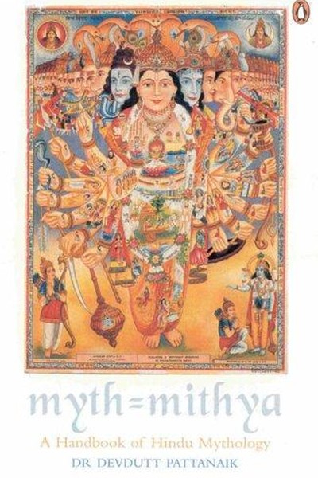

Library › Power & Strategy
Myth = Mithya — Summary & Key Lessons

Devdutt Pattanaik's most accessible book decodes Indian mythology by separating fact (ithi...
📖 OPEN THE FULL INTERACTIVE BREAKDOWN →🌐 Read it in Hindi, Hinglish, Gujarati, Tamil & 22 more languages — free, with audio.
💡 The Big Idea
Devdutt Pattanaik's most accessible book decodes Indian mythology by separating fact (ithihasa) from belief (mithya) — and shows that every myth is a coded manual for how a culture thinks about power, duty, desire and destiny. By comparing Hindu, Buddhist, Jain, Greek and Biblical stories, he reveals that mythology is not 'false stories' but 'subjective truths' — the lens through which a civilization interprets reality. For the modern reader, the payoff is a practical framework: understand the myths running your mind, your workplace and your nation, and you stop being a puppet of other people's stories.
🧠 The 6 Key Lessons
Lesson 1: Myth Is Not a Lie — It Is a Truth Seen Through a Lens
Part 1: Decoding the Myth
Pattanaik opens with the book's title itself: in Sanskrit, 'mithya' doesn't mean false — it means 'that which is subjective'. A myth is not an untrue story; it is a story that carries a culture's truth about how the world works. Every society has myths — the American dream, the meritocracy story, the 'hero founder' narrative — and they shape behaviour more than facts do. The wise reader learns to see the lens: whose truth is this story serving? When you understand that everyone operates inside a myth, you stop fighting people's facts and start understanding their worldview — which is the beginning of all real influence.
📖 Example: Pattanaik contrasts the Hindu myth of Ram (duty above all) with the Greek myth of Achilles (glory above all) — two civilizations, two definitions of heroism, two very different workplace cultures. Neither is 'wrong'; each is a lens. Read the full example →
⚡ Do this: Identify one belief you hold passionately (about money, success, family) and ask: 'Which myth did I inherit this from?' Write the answer honestly.
Lesson 2: Karma Is Not Fate — It Is Choice Within Circumstance
Part 2: The Logic of Karma
Pattanaik's most practical re-reading: karma in Indian mythology is not 'destiny written in the stars' but the principle that every choice has consequences, and every circumstance is partly the product of past choices. The key nuance: you cannot choose your starting situation (the 'script'), but you can choose your response in this moment (the 'acting'). This dissolves both fatalism ('nothing I can do') and grandiosity ('I control everything'). In business terms: you can't choose the market, the regulator or the economy — but you can choose how you respond, and those responses compound into your destiny. Karma is accountability with agency.
📖 Example: Pattanaik reads the Mahabharata through this lens: every character makes choices within impossible circumstances, and the war is the sum of those choices. Draupadi's humiliation wasn't her 'karma' as punishment — it was a situation that demanded a choice,… Read the full example →
⚡ Do this: List one circumstance frustrating you. Separate it into: what you truly cannot change (script) vs. what choice remains (acting). Take one action on the second column today.
Lesson 3: The Gods Argue: Indian Thought Is a Debate, Not a Doctrine
Part 3: The Many Voices
One of Pattanaik's sharpest observations: Indian mythology is deliberately polyphonic — there is no single 'correct' telling. The same story is told differently in every region, every temple, every century; gods argue with each other, and the texts celebrate the debate itself. This is a profound management lesson: cultures (and organizations) that allow many voices are more adaptive than those that enforce one doctrine. The Ramayana has hundreds of versions — and that's the point. The leader who insists on a single narrative kills the culture's immune system. The leader who hosts competing perspectives gets the wisdom of the whole system.
📖 Example: Pattanaik points out that even within a single epic, characters constantly disagree — Krishna advises, Karna refuses, Yudhishthira doubts — and the story's wisdom emerges from the friction. A boardroom with real debate functions the same way; a boardroom… Read the full example →
⚡ Do this: In your next team discussion, deliberately invite the dissenting view first. Frame it as 'what would the opposite camp say?' and let it be fully heard before the consensus speaks.
Lesson 4: Power Is a Duty, Not a Privilege
Part 4: The Anatomy of Power
Across Indian mythology, Pattanaik finds a consistent theory of power: kings and gods are constantly reminded that their position exists for others, not for themselves. The concept of 'dharma' — doing the right thing in your role — is the leash that makes power safe. When a king acts for his own pleasure, the kingdom suffers; when he acts for the whole, the kingdom flourishes. The modern translation: leadership is a service contract. The founder who treats the company as a personal ATM, or the manager who uses power for comfort, is violating the dharma of the role — and Indian myth warns that such violations always unravel, usually dramatically.
📖 Example: Pattanaik cites how Vishnu takes avatars not to enjoy divinity but to restore balance — the recurring myth of power-as-maintenance. Compare that to Ravana, who had more power than almost anyone and lost everything because he used it for desire. Read the full example →
⚡ Do this: Write down the role you hold (parent, manager, founder, friend). List three things you do in that role purely for others' benefit this week — and do one today.
Lesson 5: Desire Is Not the Enemy — Unconscious Desire Is
Part 5: Desire and Detachment
Pattanaik rejects the lazy reading that Indian mythology condemns desire. The texts distinguish between conscious desire (which can be examined, chosen and channeled) and unconscious desire (which runs you like a puppet). The gods themselves desire — what makes them divine is their awareness of it. The practical discipline: before acting on a strong want, ask 'what is this desire really for?' — status? safety? love? Once you name it, you can choose how to feed it. The person who never examines their desires is the easiest to manipulate; the person who knows their desires can be neither bribed nor fooled.
📖 Example: Pattanaik re-reads Kama (desire) as a legitimate god, not a demon — desire becomes destructive only when it is unexamined, like Kama's own burning by Shiva's third eye when it arrived uninvited. Examined desire is fuel; unexamined desire is fire. Read the full example →
⚡ Do this: The next time you feel a strong urge to buy, scroll, or react — pause 60 seconds and ask: 'What is this really for?' Name the underlying need before acting.
Lesson 6: Myth = Mithya in Business: Every Company Runs on a Story
Part 6: The Modern Myth
The book's final leap: every organization runs on mythology — the founder story, the origin myth, the 'why we exist' narrative — and the organizations that thrive are the ones that consciously author their myths rather than inherit them by accident. The valuation of a startup is partly a myth (a story investors believe); the brand is a myth customers buy into; the culture is a myth employees live inside. Pattanaik's warning: myths that contradict reality eventually crack — the company that tells a 'we care about people' story while firing ruthlessly creates a mythology gap that destroys trust. The skill of the modern leader is myth-management: telling the story that matches reality, and shaping reality to match the story.
📖 Example: Pattanaik would read the fall of once-great corporations as myth collapse: the story (invincible, innovative) diverged from the reality (complacent, copying), and when the gap became visible, trust evaporated faster than the numbers ever fell. The myth… Read the full example →
⚡ Do this: Write your organization's current myth in two sentences: 'We are ___' and 'We believe ___'. Then write the reality. Note the gap — and pick one behaviour that closes it.
✅ 5-Step Action Plan
- Identify one inherited belief and trace it to its myth of origin.
- Separate your current frustration into script vs. choice — act on the choice today.
- Invite the dissenting voice in your next team discussion.
- Do three unglamorous things this week purely for others' benefit in your role.
- Audit your company's myth vs. its reality — close one gap.
💬 Best Quotes from Myth = Mithya
- “Myth is not a lie; it is a truth seen through a particular lens.”
- “Karma is not fate — it is the consequence of choice, and the choice is always yours.”
- “Every organization runs on a story. The question is whether you author it or it authors you.”
Interactive version: mark lessons as read, listen in your language, share quote cards.